1. Summary: outcomes on the pilot presses
The redesign ran on PR-03, PR-06 and PR-09 (the pilot presses) from 2 February 2026, with per-stroke monitoring from 1 April 2026. The other eight presses, unchanged through June, are the comparison. Results compare April to June 2026 with April to June 2025.
In its first quarter the redesign cut scrap and rework on the pilot presses by a third and raised capability on formed characteristics above 1.33, while the comparison presses did not move.
- Scrap and rework: 2.60% of revenue fell to 1.69%, about $32,000 in the quarter. On the comparison presses it held at 3.32%.
- Scrapped pieces: the share fell 0.77 points on the pilot presses and 0.19 on the comparison presses.
Production Ppk on critical formed characteristics rose from 1.07 to 1.42 (Section 3.1). Alarm signals fell from 15.3 to 5.3 per 100 subgroups, with an acknowledgement or adjustment recorded on 99% against 65% (Section 4). The per-stroke charts stopped all 6 punch breaks on the stroke of the break (Section 3.3).
Customer PPM and sorting are too few to show an effect in three months. PPM was 267 on 6 complaints, against 191 on 6 in 2025 and 193 on 5 in 2024. There was one sorting event in the quarter of 2025 and none in 2026 (Section 5).
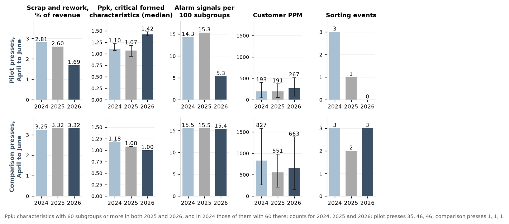
Quality costs booked to the pilot presses fell on scrap, rework and premium freight, and rose on customer charge-backs: $3,734 against $2,925, on the same number of complaints.
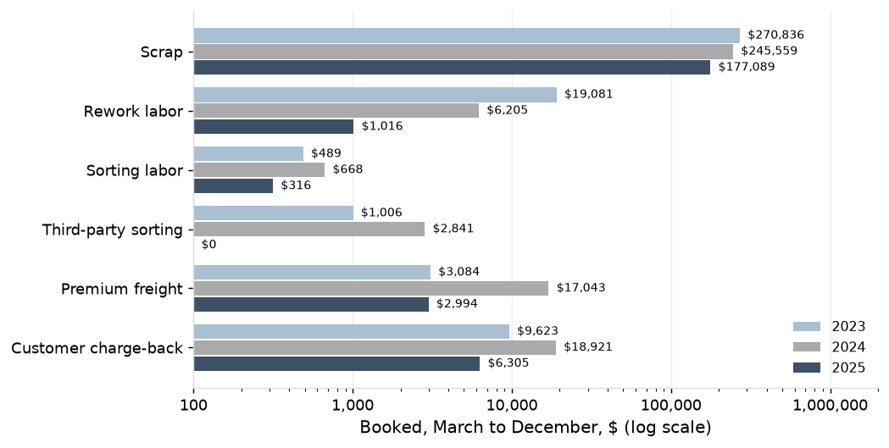
2. The redesign
Each characteristic class now runs on a chart and limits set for its behaviour.
| Characteristic class | Chart | Limits | Characteristics | Critical |
|---|---|---|---|---|
| Formed height and bend angle | three-way chart | Baseline of at least 25 subgroups spanning at least five coil changes; recomputed after each sharpening; coil-change subgroup; adjust on a rule 1 alarm | 106 | 83 |
| Hole diameter | tool-wear chart | The die's earlier sharpening intervals; recomputed on a planned trigger | 14 | 14 |
| Hole position, length, width and flatness | X-bar and R | Stable 25-subgroup baseline after each sharpening, held until the next | 76 | 31 |
| Burr against the limit sample; hole diameter by pin gauge | attribute check | New limit samples; operators qualified against the burr gauge | 50 | 0 |
| Burr height on the laboratory gauge | no chart: sharpening count | Controlled by the sharpening count, set from the die's burr line | 30 | 0 |
Every chart carries a written reaction plan: rule 1 alarms at the press, a die adjustment is made only on a rule 1 signal or at a coil-change subgroup, and every adjustment is recorded. Critical characteristics are checked every 30 minutes on the high-speed press and hourly on the medium presses, with a check at each coil change. Pilot dies are sharpened at the shot count where burr reaches 80% of its limit. Per-stroke monitoring runs on every die on the pilot presses from 1 April 2026.
3. Results by element of the redesign
3.1 Formed characteristics: three-way charts and the coil-change subgroup
Capability on formed characteristics rose above 1.33 on most characteristics. On the 46 characteristics measured in both quarters, production Ppk rose from 1.07 to 1.42, and those under 1.33 fell from 36 to 10. 39 of the 46 are higher. Cpk rose only from 1.53 to 1.70, and the gap between Cpk and Ppk fell from 0.46 to 0.28, so most of the gain is variation between subgroups removed. Punched characteristics held at 1.57 to 1.63.
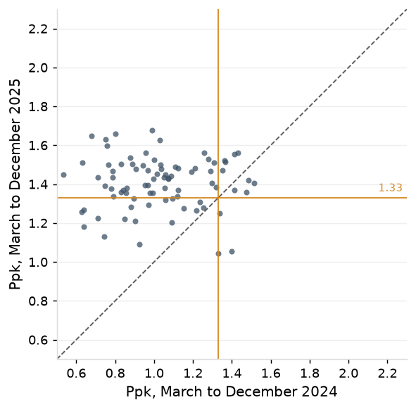
The die is centred at a coil change when the coil-change subgroup raises a rule 1 alarm, and rarely otherwise.
- Beyond three sigma: an adjustment is recorded on 158 of 159 coil-change subgroups.
- One to three sigma off centre: an adjustment is recorded on 30 of 276. The reaction plan carries no coil-change step.
Coils left off centre stay there. In April to June, 59% of the next five subgroups on a coil left past one sigma fell beyond one sigma on the same side, against 39% after a centring step.
| Distance from the centre line | Coil-change subgroups | Rule 1 alarms | Adjustments recorded |
|---|---|---|---|
| Within one sigma | 192 | 2 | 6 |
| One to two sigma | 157 | 2 | 12 |
| Two to three sigma | 119 | 1 | 18 |
| Beyond three sigma | 159 | 159 | 158 |
3.2 Sharpening at the count and tool-wear charts
Sharpening at the count has kept burr under its limit on every interval begun under it: all 13 pilot intervals begun after 2 February were sharpened at or before the count, and none crossed the limit. The count applied from each die's next sharpening, so the 8 intervals already running carried on. Five of them passed their count, and two crossed the limit, D-6315-A at twice its count. Of the 21 intervals ending in April to June, the share over the limit is unchanged at 10%, against 9% in 2025. All eight have since been sharpened. Eight other pilot dies are still on intervals begun before 2 February, and D-5884-A is at 1.33 times its count. Burr nonconformances at the press check were 1, against 2.
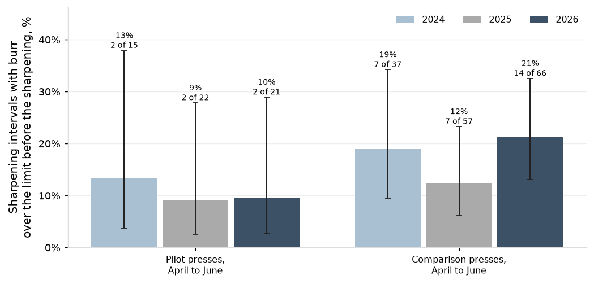
On hole diameters the tool-wear chart cut alarm signals from 14.4 to 0.6 per 100 subgroups, with production Ppk unchanged at 1.55 against 1.57.
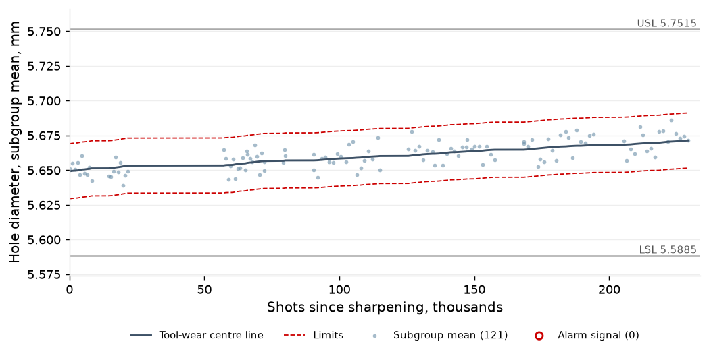
3.3 Per-stroke monitoring
Per-stroke monitoring cut the parts made between a punch failure and its finding from a median 5,756 under the hourly check to one stroke. The charts stopped the pilot presses 36 times in three months:
- a worn or chipped punch on 22;
- slug pulling on 9;
- nothing found on 5.
Stops with nothing found run at 0.63 per million strokes, against a design ceiling of 2.0.
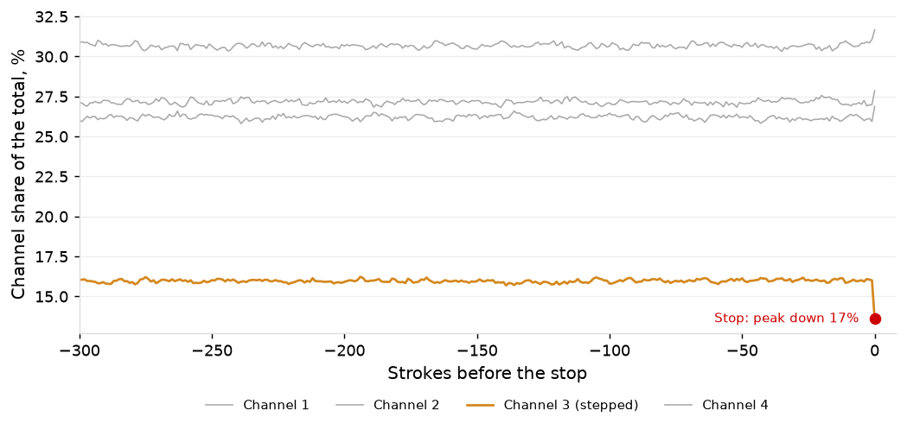
Punch replacements now follow the charts rather than nonconforming parts. 22 of the 25 replacements in April to June followed a stop and 1 followed nonconforming parts, against 3 of 15 after nonconforming parts in the same months of 2025.
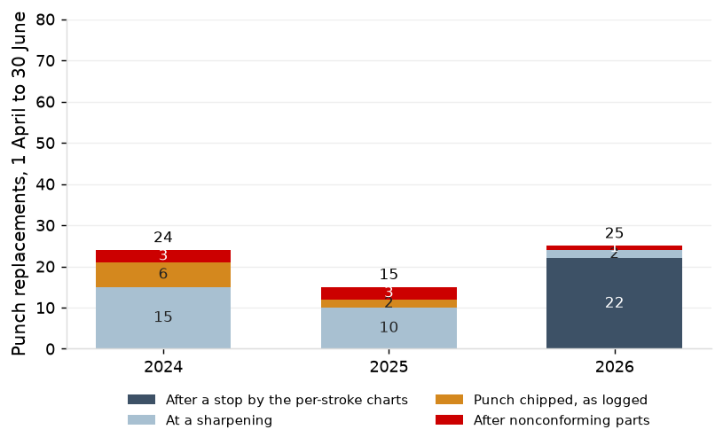
4. Signals, adjustment and the record
Alarms are now fewer and answered: 5.3 per 100 subgroups against 15.3, with an adjustment recorded on 84% against 17%. Every recorded adjustment follows a rule 1 alarm or a coil-change subgroup. The within-coil autocorrelation on adjusted characteristics moved from -0.14 to 0.07.
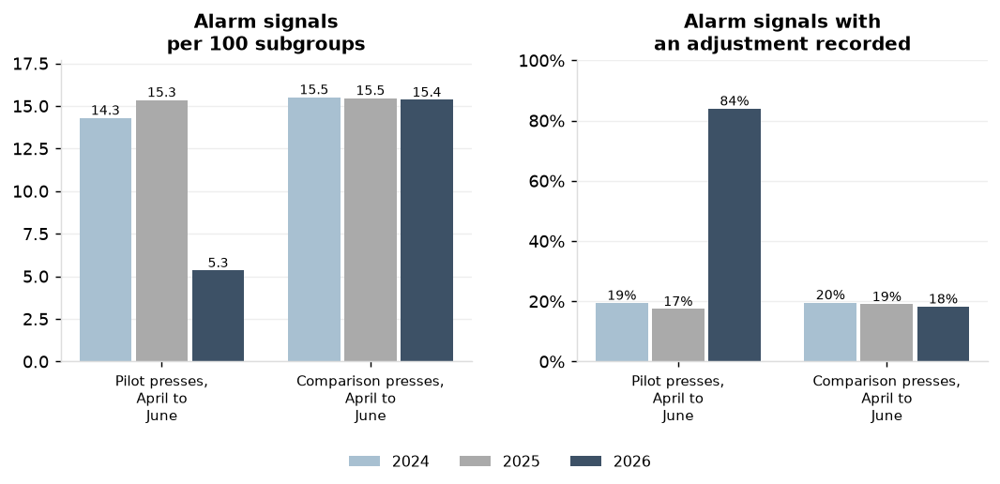
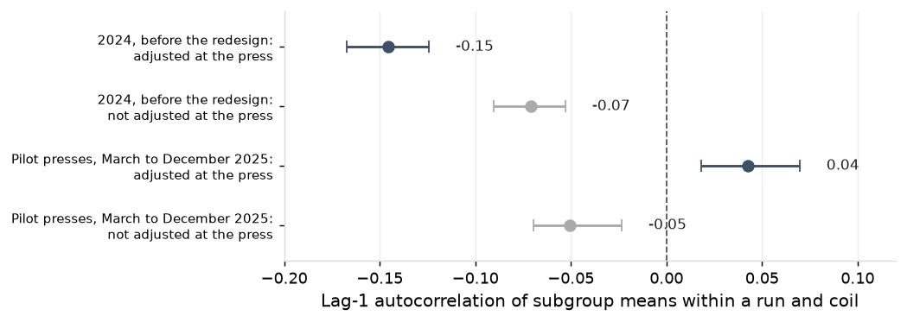
The record under the charts is restored.
- Fixtures: the two rebuilt fixtures stand at 7.7% and 9.5% of tolerance.
- Burr check: it agrees with the gauge on 92% of calls (kappa 0.78).
- Late entries: 2.1% of gauge-connected entries are made more than 20 minutes after the parts, against 15.4% of keyed entries in 2025.
- Night shift: planned checks recorded on PR-06 and PR-09 rose from 77% and 72% to 86% and 90%.
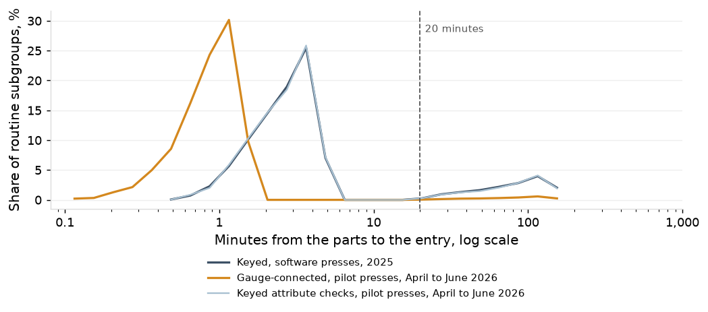
5. What has not moved
Six items are not yet conclusive or not yet in place.
| Item | As found | Action |
|---|---|---|
| Customer PPM, pilot presses | 191 to 267, on 6 complaints in each quarter | Report again on twelve months |
| Customer charge-backs, pilot presses | $2,925 to $3,734 | Report with PPM on twelve months |
| Sorting events, pilot presses | 1 to 0; 3 in 2024 | Report again on twelve months |
| Burr over the limit, pilot dies | 2 of 21 intervals, both begun before 2 February; 8 pilot dies still on intervals begun before it | Sharpen each of the 8 at its count; report on intervals begun under the count |
| Centring at the coil change, pilot presses | Adjustment recorded on 30 of 276 coil-change subgroups between one and three sigma off centre | Add a coil-change step to the reaction plan: centre the die when the coil-change subgroup is past one sigma |
| Night shift, PR-06 | 86% of planned checks recorded, against 99% on days | Weekly review by shift |
The redesign and per-stroke monitoring extend to the other eight presses from 3 August 2026.
Appendix
Method and data
Per-stroke tonnage is charted for autocorrelated data: a first-order autoregressive model is fitted to the run's first 500 production strokes; the EWMA on the per-stroke total is two-sided with lambda 0.02 and limits at 5.5 sigma of the EWMA, its variance from the fitted model; each channel is charted on its share of the total with one residual beyond 5.5 sigma as the signal. The chart parameters were set by run-length computation at autocorrelations of 0.50, 0.60 and 0.70 for a combined in-control average run length of at least 500,000 strokes. Setup strokes, those before the monitor's run start, are set aside. Event counts and complaint counts are compared by the exact Poisson rate test; PPM is pieces rejected over pieces shipped as the customer scored it, with a bootstrap interval over complaints, since rejected pieces arrive in batches; scrapped pieces are compared by the two-proportion score test with the Newcombe interval, shown in the appendix. Capability is as in the assessment report: within-subgroup sigma pooled across subgroups, overall sigma from all readings, medians over characteristics with 60 subgroups or more in the period and a bootstrap interval over characteristics. Gauge R&R is by the ANOVA method with %tolerance at 6 sigma and ndc; attribute agreement with Fleiss' kappa. Outcomes are on the pilot presses for April to June and the comparison presses (the other eight) for the same months, each against the same months of 2025 and 2024. Tonnage in kN; dimensions in millimetres; costs as booked, in US dollars. Data: the SPC software, the press monitor historian (every stroke on the pilot presses), fault events, ERP, QMS, die maintenance log, calibration system, accounting and the gauge study worksheets, as exported to 30 June 2026.
Appendix 1. The redesign (Section 2)
| Characteristic class | Chart | Scheme | Limits | Characteristics, 30 June 2026 | Critical | Subgroups used, median | Coil changes spanned, median |
|---|---|---|---|---|---|---|---|
| Formed height and bend angle | three-way chart | Subgroup means on an individuals chart with limits from the moving range of the baseline means, and a range chart | Baseline of at least 25 subgroups spanning at least five coil changes; recomputed after each sharpening; coil-change subgroup; adjust on a rule 1 alarm | 106 | 83 | 154 | 5 |
| Hole diameter | tool-wear chart | Centre line on the regression of diameter on shots since sharpening, limits about the line | The die's earlier sharpening intervals; recomputed on a planned trigger | 14 | 14 | 596 | |
| Hole position, length, width and flatness | X-bar and R | Means and range charts | Stable 25-subgroup baseline after each sharpening, held until the next | 76 | 31 | 25 | |
| Burr against the limit sample; hole diameter by pin gauge | attribute check | Accept or reject | New limit samples; operators qualified against the burr gauge | 50 | 0 | ||
| Burr height on the laboratory gauge | no chart: sharpening count | No chart | Controlled by the sharpening count, set from the die's burr line | 30 | 0 |
| Characteristic class | Limits basis as recorded | Characteristics | Critical | Subgroups used, median | Coil changes spanned, median | Check frequency in the master, minutes |
|---|---|---|---|---|---|---|
| burr height and flatness | baseline after sharpening | 2 | 0 | 25 | 60 | |
| formed height and bend angle | baseline after sharpening | 106 | 83 | 154 | 5 | 60 |
| hole diameter | tool-wear regression | 14 | 14 | 596 | 60 | |
| hole position, length and width | baseline after sharpening | 74 | 31 | 25 | 60 |
| Signal | Step | Action | Owner | Characteristics | First in force |
|---|---|---|---|---|---|
| rule 1 | 1 | Stop the press and hold the parts since the last check | operator | 196 | 2026-02-02 |
| rule 1 | 2 | Measure five more consecutive parts on the same gauge | operator | 196 | 2026-02-02 |
| rule 1 | 3 | If confirmed, call the die setter; adjust only as the plan for the characteristic states and record the adjustment | die setter | 196 | 2026-02-02 |
| rule 1 | 4 | Quality technician dispositions the held parts and releases the press | quality technician | 196 | 2026-02-02 |
| rules 2 to 4 | 1 | Measure five more consecutive parts on the same gauge | operator | 196 | 2026-02-02 |
| rules 2 to 4 | 2 | If the signal repeats, call the die setter and record the cause and the adjustment | die setter | 196 | 2026-02-02 |
| rules 2 to 4 | 3 | Quality technician reviews at the next check | quality technician | 196 | 2026-02-02 |
| Press | Period | Entry | Routine subgroups | Within five minutes of the hour | Within five minutes of the half hour |
|---|---|---|---|---|---|
| PR-03 | April to June 2025 | keyed | 98 | 60.2% | 8.2% |
| PR-03 | April to June 2025 | paper transcription | 6,303 | 72.7% | 4.1% |
| PR-03 | April to June 2026 | gauge-connected | 9,122 | 56.1% | 35.5% |
| PR-03 | April to June 2026 | keyed | 2,536 | 51.5% | 26.7% |
| PR-06 | April to June 2025 | keyed | 7,868 | 59.7% | 8.2% |
| PR-06 | April to June 2026 | gauge-connected | 7,389 | 88.9% | 2.6% |
| PR-06 | April to June 2026 | keyed | 2,114 | 42.1% | 35.7% |
| PR-09 | April to June 2025 | keyed | 7,465 | 60.3% | 9.8% |
| PR-09 | April to June 2026 | gauge-connected | 6,360 | 87.9% | 1.8% |
| PR-09 | April to June 2026 | keyed | 2,513 | 48.9% | 28.3% |
Appendix 2. Measurement, adjustment and recording (Section 4)
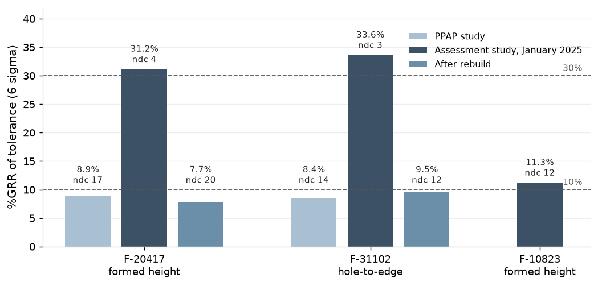
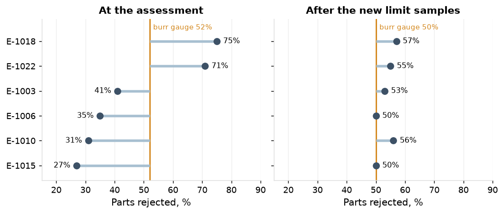
| Fixture | Study | Date | Tolerance, mm | %GRR of tolerance | %Study variation | ndc | Repeatability SD, mm | Reproducibility SD, mm | Interaction p |
|---|---|---|---|---|---|---|---|---|---|
| F-10823 | assessment, January 2026 | 2026-01-13 | 0.36 | 11.3 | 11.5 | 12 | 0.0059 | 0.0032 | 0.881 |
| F-20417 | PPAP | 2020-10-22 | 0.40 | 8.9 | 8.2 | 17 | 0.0047 | 0.0036 | 0.171 |
| F-20417 | assessment, January 2026 | 2026-01-12 | 0.40 | 31.2 | 30.6 | 4 | 0.0112 | 0.0175 | 0.059 |
| F-20417 | after rebuild | 2026-01-21 | 0.40 | 7.7 | 7.0 | 20 | 0.0049 | 0.0015 | 0.483 |
| F-31102 | PPAP | 2019-07-29 | 0.30 | 8.4 | 9.9 | 14 | 0.0037 | 0.0021 | 0.223 |
| F-31102 | assessment, January 2026 | 2026-01-14 | 0.30 | 33.6 | 35.7 | 3 | 0.0092 | 0.0141 | 0.715 |
| F-31102 | after rebuild | 2026-01-28 | 0.30 | 9.5 | 11.6 | 12 | 0.0044 | 0.0018 | 0.969 |
| Source | DF | SS | MS | F |
|---|---|---|---|---|
| Part | 9 | 0.443071 | 0.049230 | 2013.960 |
| Operator | 2 | 0.000187 | 0.000093 | 3.818 |
| Part * Operator | 18 | 0.000436 | 0.000024 | 0.990 |
| Repeatability | 60 | 0.001467 | 0.000024 | |
| Total | 89 | 0.445160 |
| Source | VarComp | %Contribution (of VarComp) | StdDev (SD) | Study Var (6 x SD) |
|---|---|---|---|---|
| Total Gage R&R | 0.0000267 | 0.49 | 0.00517 | 0.03099 |
| Repeatability | 0.0000244 | 0.44 | 0.00494 | 0.02963 |
| Reproducibility | 0.0000023 | 0.04 | 0.00152 | 0.00910 |
| Operator | 0.0000023 | 0.04 | 0.00152 | 0.00910 |
| Operator*Part | 0.0000000 | 0.00 | 0.00000 | 0.00000 |
| Part-To-Part | 0.0054673 | 99.51 | 0.07394 | 0.44365 |
| Total Variation | 0.0054940 | 100.00 | 0.07412 | 0.44473 |
| Source | DF | SS | MS | F |
|---|---|---|---|---|
| Part | 9 | 0.136517 | 0.015169 | 682.583 |
| Operator | 2 | 0.000242 | 0.000121 | 5.450 |
| Part * Operator | 18 | 0.000180 | 0.000010 | 0.450 |
| Repeatability | 60 | 0.001333 | 0.000022 | |
| Total | 89 | 0.138272 |
| Source | VarComp | %Contribution (of VarComp) | StdDev (SD) | Study Var (6 x SD) |
|---|---|---|---|---|
| Total Gage R&R | 0.0000228 | 1.34 | 0.00477 | 0.02864 |
| Repeatability | 0.0000194 | 1.14 | 0.00440 | 0.02643 |
| Reproducibility | 0.0000034 | 0.20 | 0.00184 | 0.01105 |
| Operator | 0.0000034 | 0.20 | 0.00184 | 0.01105 |
| Operator*Part | 0.0000000 | 0.00 | 0.00000 | 0.00000 |
| Part-To-Part | 0.0016832 | 98.66 | 0.04103 | 0.24616 |
| Total Variation | 0.0017060 | 100.00 | 0.04130 | 0.24782 |
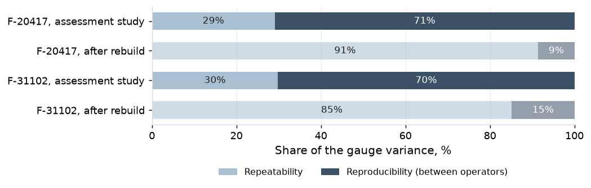
| Burr check study | Calls | Within operator | All operators agree | Pairs of operators agree | Against the burr gauge | Low | High | Fleiss' kappa | Kappa low | Kappa high |
|---|---|---|---|---|---|---|---|---|---|---|
| assessment, January 2026 | 600 | 86% | 28% | 71% | 80.3% | 77.0% | 83.3% | 0.44 | 0.32 | 0.56 |
| after new limit samples | 600 | 89% | 68% | 89% | 91.8% | 89.4% | 93.8% | 0.78 | 0.67 | 0.88 |
| Entry method | Readings | Ending in 0 or 5 | Times the uniform rate | Set aside as mis-keyed |
|---|---|---|---|---|
| gauge-connected | 121,255 | 24,010 | 0.99 | 0 |
| keyed | 452,775 | 159,094 | 1.76 | 1,588 |
| paper transcription | 240,160 | 47,684 | 0.99 | 0 |
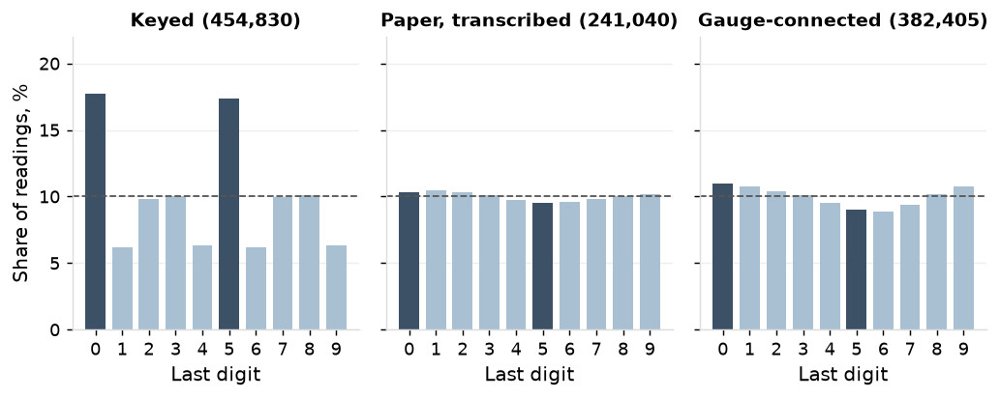
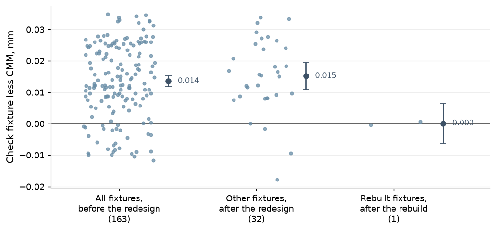
| Period | Characteristics | Lag-1 autocorrelation | Low | High | Segments | Characteristics, count |
|---|---|---|---|---|---|---|
| 2025, before the redesign | adjusted at the press | -0.139 | -0.160 | -0.119 | 5,641 | 472 |
| 2025, before the redesign | not adjusted at the press | -0.066 | -0.084 | -0.047 | 2,019 | 155 |
| pilot presses, April to June 2026 | adjusted at the press | 0.067 | 0.012 | 0.123 | 873 | 139 |
| pilot presses, April to June 2026 | not adjusted at the press | -0.069 | -0.105 | -0.023 | 348 | 55 |
| Record | Subgroups | Entered more than 20 minutes after the parts | Share | Low | High | Minutes to entry, median |
|---|---|---|---|---|---|---|
| software presses, 2025, keyed | 119,761 | 18,106 | 15.1% | 14.9% | 15.3% | 3.1 |
| pilot presses, April to June 2025, keyed | 15,431 | 2,373 | 15.4% | 14.8% | 16.0% | 3.1 |
| pilot presses, April to June 2026, gauge-connected | 22,871 | 489 | 2.1% | 2.0% | 2.3% | 0.9 |
| pilot presses, April to June 2026, keyed (attribute checks) | 7,163 | 1,059 | 14.8% | 14.0% | 15.6% | 3.0 |
| Press | Period | Shift | Planned checks | Recorded | Share | Low | High |
|---|---|---|---|---|---|---|---|
| PR-03 | April to June 2025 | days | 448 | 433 | 96.7% | 94.5% | 98.0% |
| PR-03 | April to June 2025 | nights | 399 | 361 | 90.5% | 87.2% | 93.0% |
| PR-03 | April to June 2026 | days | 481 | 474 | 98.5% | 97.0% | 99.3% |
| PR-03 | April to June 2026 | nights | 376 | 372 | 98.9% | 97.3% | 99.6% |
| PR-06 | April to June 2025 | days | 518 | 499 | 96.3% | 94.3% | 97.6% |
| PR-06 | April to June 2025 | nights | 451 | 349 | 77.4% | 73.3% | 81.0% |
| PR-06 | April to June 2026 | days | 525 | 519 | 98.9% | 97.5% | 99.5% |
| PR-06 | April to June 2026 | nights | 473 | 408 | 86.3% | 82.9% | 89.1% |
| PR-09 | April to June 2025 | days | 541 | 513 | 94.8% | 92.6% | 96.4% |
| PR-09 | April to June 2025 | nights | 431 | 311 | 72.2% | 67.7% | 76.2% |
| PR-09 | April to June 2026 | days | 494 | 489 | 99.0% | 97.7% | 99.6% |
| PR-09 | April to June 2026 | nights | 447 | 401 | 89.7% | 86.5% | 92.2% |
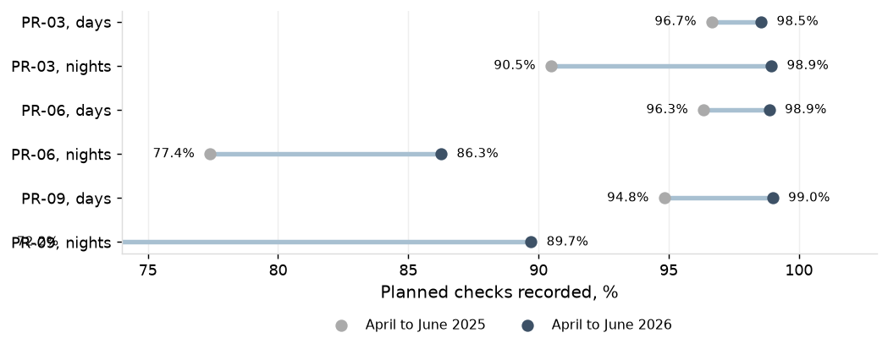
Appendix 3. Per-stroke monitoring (Section 3.3)
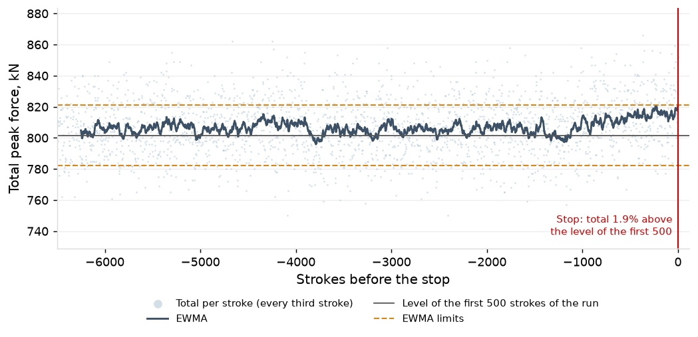
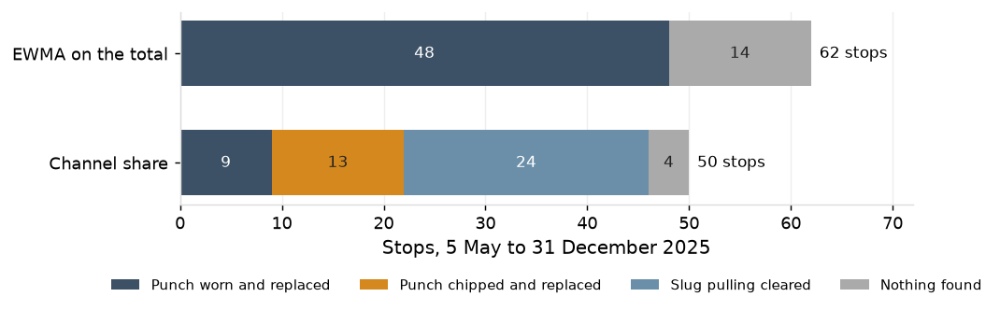
| Press | Runs | Production strokes | Setup strokes set aside | Lag-1 autocorrelation, median by run | Lowest | Highest | AR(1) coefficient, first 500 strokes | Coefficient of variation |
|---|---|---|---|---|---|---|---|---|
| PR-03 | 41 | 4,913,478 | 14,399 | 0.60 | 0.56 | 0.65 | 0.58 | 2.2% |
| PR-06 | 37 | 1,637,369 | 14,078 | 0.62 | 0.55 | 0.64 | 0.61 | 2.2% |
| PR-09 | 49 | 1,432,916 | 18,075 | 0.58 | 0.55 | 0.64 | 0.58 | 2.2% |
| pilot presses | 127 | 7,983,763 | 46,552 | 0.60 | 0.55 | 0.65 | 0.59 | 2.2% |
| Chart | nothing found | punch chipped and replaced | punch worn and replaced | slug pulling cleared | Stops |
|---|---|---|---|---|---|
| EWMA on the total | 5 | 0 | 13 | 0 | 18 |
| channel share | 0 | 6 | 3 | 9 | 18 |
| both charts | 5 | 6 | 16 | 9 | 36 |
| Press | nothing found | punch chipped and replaced | punch worn and replaced | slug pulling cleared | Stops |
|---|---|---|---|---|---|
| PR-03 | 5 | 5 | 9 | 1 | 20 |
| PR-06 | 0 | 1 | 4 | 1 | 6 |
| PR-09 | 0 | 0 | 3 | 7 | 10 |
| Press | Production strokes | Stops | With nothing found | Per 1,000,000 strokes | Low | High | Design, at most |
|---|---|---|---|---|---|---|---|
| PR-03 | 4,913,478 | 20 | 5 | 1.02 | 0.33 | 2.37 | 2.0 |
| PR-06 | 1,637,369 | 6 | 0 | 0.00 | 0.00 | 2.25 | 2.0 |
| PR-09 | 1,432,916 | 10 | 0 | 0.00 | 0.00 | 2.57 | 2.0 |
| pilot presses | 7,983,763 | 36 | 5 | 0.63 | 0.20 | 1.46 | 2.0 |
| Finding | Chart | Stops | Total at the stop against the first 500 strokes, median | 10th percentile | 90th percentile | With 6,000 strokes before | Over the last 6,000 strokes, median |
|---|---|---|---|---|---|---|---|
| nothing found | EWMA on the total | 5 | -0.9% | -1.2% | 1.2% | 5 | -0.7% |
| punch worn and replaced | EWMA on the total | 13 | 1.9% | 1.6% | 2.1% | 13 | 1.8% |
| punch worn and replaced | channel share | 3 | 1.1% | 1.0% | 1.3% | 3 | 1.1% |
| slug pulling cleared | channel share | 9 | 0.1% | -0.6% | 0.6% | 7 | 0.3% |
| Stop | Press | Die | Channel | Share at the stop, sigma | Channel peak before, kN | From the step, kN | Fall | Strokes from the step to the stop |
|---|---|---|---|---|---|---|---|---|
| FE-013771 | PR-03 | D-5731-A | ch1 | -14.6 | 294 | 270 | 8.1% | 1 |
| FE-013956 | PR-06 | D-8553-A | ch3 | -24.2 | 151 | 125 | 17.1% | 1 |
| FE-014208 | PR-03 | D-6315-A | ch2 | -10.3 | 379 | 351 | 7.3% | 1 |
| FE-014297 | PR-03 | D-6467-B | ch2 | -13.9 | 272 | 229 | 15.8% | 1 |
| FE-014412 | PR-03 | D-2836-C | ch1 | -18.6 | 464 | 398 | 14.2% | 1 |
| FE-014429 | PR-03 | D-2836-C | ch2 | -12.5 | 403 | 356 | 11.6% | 1 |
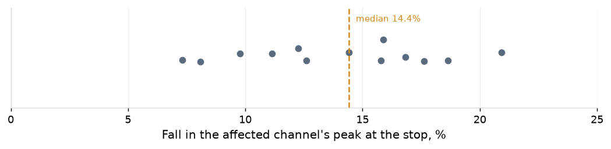
| Year, 1 April to 30 June | Punch replacement | Count |
|---|---|---|
| 2024 | at a sharpening | 15 |
| 2024 | punch chipped | 6 |
| 2024 | after nonconforming parts | 3 |
| 2025 | at a sharpening | 10 |
| 2025 | after nonconforming parts | 3 |
| 2025 | punch chipped | 2 |
| 2026 | after a stop by the per-stroke charts | 22 |
| 2026 | at a sharpening | 2 |
| 2026 | after nonconforming parts | 1 |
| Sorting events found at the press, pilot presses | Events | Parts since the check before (estimated), median | Quantity sorted, median | Largest |
|---|---|---|---|---|
| before per-stroke monitoring, 2024 to 31 March 2026 | 19 | 5,756 | 2,991 | 17,693 |
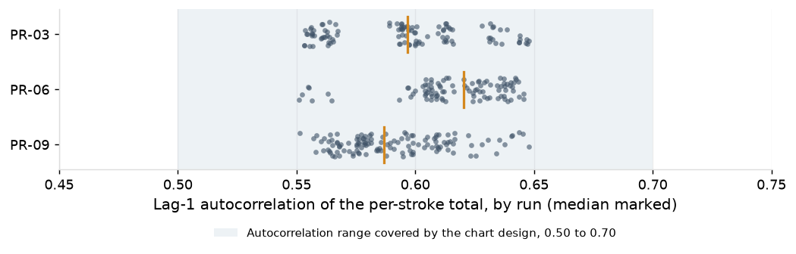
Appendix 4. Outcomes (Sections 1, 3 and 5)
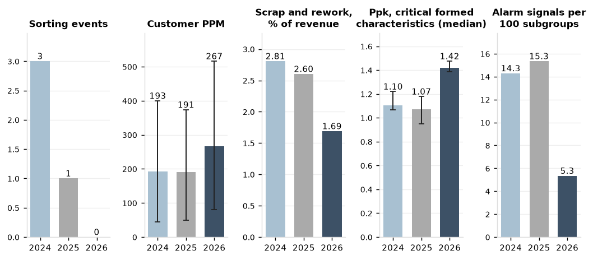
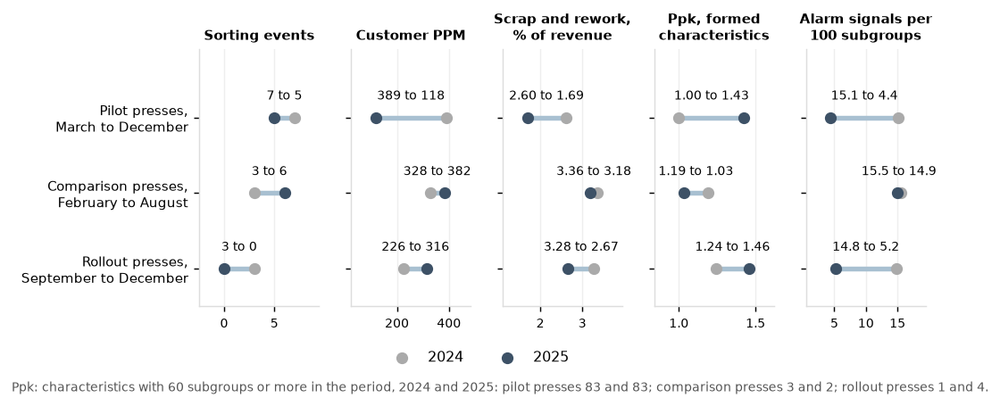
| Press set | Months | Year | Sorting events | Low | High | Quantity sorted | Per event, median | Cost booked, $ | Booked or estimated, $ | p, 2026 against this year |
|---|---|---|---|---|---|---|---|---|---|---|
| pilot presses | April to June | 2024 | 3 | 0.6 | 8.8 | 10,215 | 2,941 | 1,184 | 1,184 | 0.25 |
| pilot presses | April to June | 2025 | 1 | 0.0 | 5.6 | 6,253 | 6,253 | 1,093 | 1,093 | 1.00 |
| pilot presses | April to June | 2026 | 0 | 0.0 | 3.7 | 0 | 0 | 0 | ||
| comparison presses | April to June | 2024 | 3 | 0.6 | 8.8 | 9,366 | 3,611 | 308 | 622 | 1.00 |
| comparison presses | April to June | 2025 | 2 | 0.2 | 7.2 | 19,383 | 9,692 | 1,119 | 1,119 | 1.00 |
| comparison presses | April to June | 2026 | 3 | 0.6 | 8.8 | 22,204 | 5,321 | 1,190 | 1,527 |
| Press set | Months | Year | Complaints | Duplicate entries left out | Pieces rejected | Pieces shipped | PPM | Low | High | p, 2026 against this year |
|---|---|---|---|---|---|---|---|---|---|---|
| pilot presses | April to June | 2024 | 5 | 0 | 2,539 | 13,137,071 | 193 | 45 | 400 | 0.77 |
| pilot presses | April to June | 2025 | 6 | 1 | 2,369 | 12,428,029 | 191 | 50 | 374 | 1.00 |
| pilot presses | April to June | 2026 | 6 | 0 | 3,171 | 11,870,036 | 267 | 81 | 516 | |
| comparison presses | April to June | 2024 | 11 | 0 | 18,385 | 22,232,269 | 827 | 260 | 1,585 | 0.35 |
| comparison presses | April to June | 2025 | 12 | 1 | 12,490 | 22,655,261 | 551 | 210 | 984 | 0.25 |
| comparison presses | April to June | 2026 | 7 | 2 | 15,998 | 24,118,064 | 663 | 149 | 1,381 |
| Press set | Months | Year | Scrap booked, $ | Rework labor booked, $ | Revenue, $ | Share of revenue |
|---|---|---|---|---|---|---|
| pilot presses | April to June | 2024 | 85,536 | 3,718 | 3,180,309 | 2.81% |
| pilot presses | April to June | 2025 | 80,442 | 1,540 | 3,149,712 | 2.60% |
| pilot presses | April to June | 2026 | 58,407 | 256 | 3,472,822 | 1.69% |
| comparison presses | April to June | 2024 | 254,925 | 7,046 | 8,072,082 | 3.25% |
| comparison presses | April to June | 2025 | 232,491 | 6,175 | 7,187,395 | 3.32% |
| comparison presses | April to June | 2026 | 264,842 | 5,277 | 8,148,167 | 3.32% |
| Press set | Months | Year | Pieces scrapped | Pieces produced | Share of pieces | Score test p, 2026 against this year | Difference to 2026, points, low | High |
|---|---|---|---|---|---|---|---|---|
| pilot presses | April to June | 2024 | 346,087 | 13,629,309 | 2.54% | under 0.0001 | -0.75 | -0.73 |
| pilot presses | April to June | 2025 | 338,779 | 13,154,451 | 2.58% | under 0.0001 | -0.78 | -0.76 |
| pilot presses | April to June | 2026 | 213,760 | 11,856,106 | 1.80% | |||
| comparison presses | April to June | 2024 | 653,730 | 22,487,848 | 2.91% | under 0.0001 | -0.09 | -0.07 |
| comparison presses | April to June | 2025 | 679,276 | 22,482,549 | 3.02% | under 0.0001 | -0.20 | -0.18 |
| comparison presses | April to June | 2026 | 651,482 | 23,044,686 | 2.83% |
| Press set | Class | Year | Characteristics | Subgroups | Ppk, median | Low | High | Cpk, median | Cpk low | Cpk high | Ppk under 1.33 |
|---|---|---|---|---|---|---|---|---|---|---|---|
| comparison presses | formed | 2024 | 1 | 172 | 1.18 | 1.18 | 1.18 | 1.85 | 1.85 | 1.85 | 1 |
| comparison presses | formed | 2025 | 1 | 98 | 1.08 | 1.08 | 1.08 | 1.62 | 1.62 | 1.62 | 1 |
| comparison presses | formed | 2026 | 1 | 123 | 1.00 | 1.00 | 1.00 | 1.84 | 1.84 | 1.84 | 1 |
| comparison presses | punched | 2024 | 2 | 239 | 1.67 | 1.40 | 1.94 | 1.79 | 1.51 | 2.06 | 0 |
| comparison presses | punched | 2025 | 2 | 231 | 1.47 | 1.45 | 1.50 | 1.69 | 1.56 | 1.81 | 0 |
| comparison presses | punched | 2026 | 2 | 184 | 1.60 | 1.42 | 1.77 | 1.72 | 1.54 | 1.90 | 0 |
| pilot presses | formed | 2024 | 35 | 4,358 | 1.10 | 1.07 | 1.22 | 1.61 | 1.52 | 1.67 | 26 |
| pilot presses | formed | 2025 | 46 | 5,855 | 1.07 | 0.95 | 1.18 | 1.53 | 1.47 | 1.60 | 36 |
| pilot presses | formed | 2026 | 46 | 7,843 | 1.42 | 1.39 | 1.47 | 1.70 | 1.65 | 1.74 | 10 |
| pilot presses | punched | 2024 | 19 | 2,516 | 1.56 | 1.48 | 1.64 | 1.70 | 1.60 | 1.79 | 2 |
| pilot presses | punched | 2025 | 26 | 3,601 | 1.57 | 1.53 | 1.64 | 1.72 | 1.66 | 1.86 | 2 |
| pilot presses | punched | 2026 | 26 | 4,347 | 1.63 | 1.55 | 1.68 | 1.77 | 1.72 | 1.90 | 2 |
| Press set | Class | Year | Characteristics | Subgroups | Ppk, median | Low | High | Cpk, median | Cpk low | Cpk high | Ppk under 1.33 |
|---|---|---|---|---|---|---|---|---|---|---|---|
| comparison presses | formed | 2024 | 1 | 172 | 1.18 | 1.18 | 1.18 | 1.85 | 1.85 | 1.85 | 1 |
| comparison presses | formed | 2025 | 1 | 98 | 1.08 | 1.08 | 1.08 | 1.62 | 1.62 | 1.62 | 1 |
| comparison presses | formed | 2026 | 1 | 123 | 1.00 | 1.00 | 1.00 | 1.84 | 1.84 | 1.84 | 1 |
| comparison presses | punched | 2024 | 3 | 351 | 1.90 | 1.40 | 1.94 | 2.06 | 1.51 | 2.22 | 0 |
| comparison presses | punched | 2025 | 3 | 334 | 1.50 | 1.45 | 1.61 | 1.81 | 1.56 | 2.20 | 0 |
| comparison presses | punched | 2026 | 2 | 184 | 1.60 | 1.42 | 1.77 | 1.72 | 1.54 | 1.90 | 0 |
| pilot presses | formed | 2024 | 55 | 6,467 | 1.10 | 1.06 | 1.20 | 1.59 | 1.53 | 1.65 | 43 |
| pilot presses | formed | 2025 | 60 | 6,803 | 1.09 | 1.06 | 1.18 | 1.53 | 1.51 | 1.60 | 46 |
| pilot presses | formed | 2026 | 61 | 9,775 | 1.43 | 1.39 | 1.48 | 1.70 | 1.66 | 1.75 | 15 |
| pilot presses | punched | 2024 | 31 | 3,812 | 1.57 | 1.50 | 1.64 | 1.72 | 1.61 | 1.86 | 3 |
| pilot presses | punched | 2025 | 34 | 4,146 | 1.58 | 1.53 | 1.64 | 1.76 | 1.68 | 1.86 | 3 |
| pilot presses | punched | 2026 | 34 | 5,522 | 1.61 | 1.54 | 1.67 | 1.77 | 1.72 | 1.88 | 2 |
| Press set | Year | Burr nonconformances at the press check | At the dock audit | At the customer | Sharpening intervals with burr gauge subgroups | With burr over the limit | Share | Low | High |
|---|---|---|---|---|---|---|---|---|---|
| comparison presses | 2024 | 8 | 5 | 2 | 37 | 7 | 19% | 9% | 34% |
| comparison presses | 2025 | 6 | 2 | 1 | 57 | 7 | 12% | 6% | 23% |
| comparison presses | 2026 | 11 | 2 | 4 | 66 | 14 | 21% | 13% | 33% |
| pilot presses | 2024 | 5 | 2 | 5 | 15 | 2 | 13% | 4% | 38% |
| pilot presses | 2025 | 2 | 0 | 3 | 22 | 2 | 9% | 3% | 28% |
| pilot presses | 2026 | 1 | 0 | 3 | 21 | 2 | 10% | 3% | 29% |
| Press set | Presses | Year | Subgroups | Alarm signals per 100 | Rule 1 per 100 | With an acknowledgement or adjustment | With an adjustment recorded |
|---|---|---|---|---|---|---|---|
| comparison presses | all presses of the set | 2024 | 18,199 | 15.5 | 13.8 | 64% | 20% |
| comparison presses | all presses of the set | 2025 | 18,172 | 15.5 | 13.5 | 65% | 19% |
| comparison presses | all presses of the set | 2026 | 17,699 | 15.4 | 13.7 | 62% | 18% |
| pilot presses | PR-03 (paper before) | 2024 | 5,299 | 22.5 | 22.5 | 32% | 23% |
| pilot presses | PR-03 (paper before) | 2025 | 5,238 | 27.4 | 27.4 | 29% | 20% |
| pilot presses | PR-03 (paper before) | 2026 | 9,632 | 4.0 | 4.0 | 99% | 80% |
| pilot presses | PR-06 and PR-09 (software before) | 2024 | 13,184 | 11.0 | 8.3 | 100% | 16% |
| pilot presses | PR-06 and PR-09 (software before) | 2025 | 13,579 | 10.7 | 8.3 | 100% | 15% |
| pilot presses | PR-06 and PR-09 (software before) | 2026 | 14,740 | 6.2 | 6.2 | 100% | 86% |
| pilot presses | all presses of the set | 2024 | 18,483 | 14.3 | 12.4 | 69% | 19% |
| pilot presses | all presses of the set | 2025 | 18,817 | 15.3 | 13.6 | 65% | 17% |
| pilot presses | all presses of the set | 2026 | 24,372 | 5.3 | 5.3 | 99% | 84% |
| Month, 2026 | Subgroups on formed characteristics, pilot presses | Rule 1 alarms | Per 100 subgroups |
|---|---|---|---|
| 2026-04 | 4,754 | 442 | 9.3 |
| 2026-05 | 4,350 | 284 | 6.5 |
| 2026-06 | 4,351 | 287 | 6.6 |
| Hole diameters, pilot presses | Year | Characteristics | Subgroups | Alarm signals | Alarm signals per 100 | Ppk, median | Low | High |
|---|---|---|---|---|---|---|---|---|
| April to June | 2025 | 14 | 1,378 | 198 | 14.4 | 1.57 | 1.51 | 1.71 |
| April to June | 2026 | 14 | 1,901 | 12 | 0.6 | 1.55 | 1.39 | 1.69 |
| Hole diameter | Die | Press | Subgroups, 2025 | Alarm signals, 2025 | Ppk, 2025 | Subgroups, 2026 | Alarm signals, 2026 | Ppk, 2026 |
|---|---|---|---|---|---|---|---|---|
| C-11687-01 | D-1687-A | PR-03 | 85 | 39 | 1.17 | 257 | 2 | 1.48 |
| C-12836-01 | D-2836-C | PR-03 | 82 | 16 | 1.54 | 67 | 0 | 1.69 |
| C-15609-01 | D-5609-A | PR-03 | 69 | 17 | 1.57 | 44 | 0 | |
| C-15731-02 | D-5731-A | PR-03 | 59 | 20 | 306 | 2 | 1.39 | |
| C-16315-02 | D-6315-A | PR-03 | 25 | 5 | 147 | 1 | 1.42 | |
| C-20417-01 | D-0417-B | PR-06 | 227 | 19 | 1.51 | 208 | 2 | 1.32 |
| C-22558-01 | D-2558-A | PR-06 | 117 | 19 | 1.59 | 106 | 0 | 1.56 |
| C-22617-01 | D-2617-A | PR-06 | 62 | 11 | 1.71 | 78 | 0 | 1.55 |
| C-28553-01 | D-8553-A | PR-06 | 127 | 22 | 1.62 | 114 | 1 | 1.90 |
| C-29540-01 | D-9540-C | PR-06 | 115 | 5 | 1.87 | 295 | 1 | 1.34 |
| C-31102-01 | D-1102-A | PR-09 | 205 | 15 | 1.55 | 125 | 2 | 1.84 |
| C-35987-01 | D-5987-A | PR-09 | 56 | 6 | 74 | 1 | 1.69 | |
| C-37329-02 | D-7329-A | PR-09 | 63 | 2 | 1.94 | 28 | 0 | |
| C-39736-01 | D-9736-A | PR-09 | 86 | 2 | 1.44 | 52 | 0 |
| Press set | Quality cost line as booked | 2024, $ | 2025, $ | 2026, $ |
|---|---|---|---|---|
| comparison presses | customer charge-back | 14,233 | 12,176 | 6,282 |
| comparison presses | premium freight | 4,232 | 1,030 | 2,391 |
| comparison presses | rework labor | 7,046 | 6,175 | 5,277 |
| comparison presses | scrap | 254,925 | 232,491 | 264,842 |
| comparison presses | sorting labor | 308 | 1,119 | 1,190 |
| comparison presses | sorting, booked or estimated from run hours | 622 | 1,119 | 1,527 |
| pilot presses | customer charge-back | 2,805 | 2,925 | 3,734 |
| pilot presses | premium freight | 1,609 | 1,265 | 905 |
| pilot presses | rework labor | 3,718 | 1,540 | 256 |
| pilot presses | scrap | 85,536 | 80,442 | 58,407 |
| pilot presses | sorting labor | 325 | 0 | 0 |
| pilot presses | sorting, booked or estimated from run hours | 1,184 | 1,093 | 0 |
| pilot presses | third-party sorting | 860 | 1,093 | 0 |
| Months | Booked at plant level | 2024, $ | 2025, $ | 2026, $ |
|---|---|---|---|---|
| April to June | calibration | 8,726 | 9,165 | 8,726 |
| April to June | gauge and fixture repair | 677 | 920 | 1,665 |
| April to June | inspection labor | 59,198 | 60,562 | 61,361 |
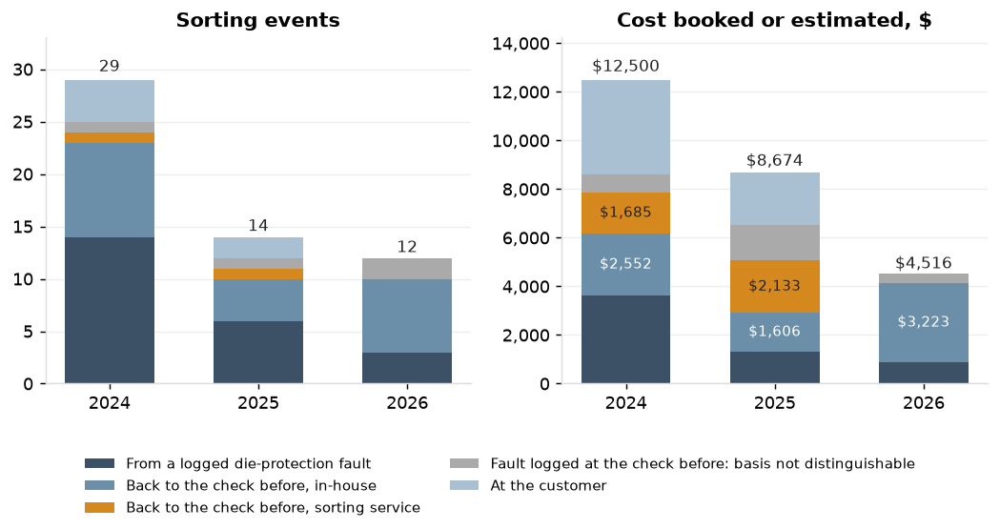
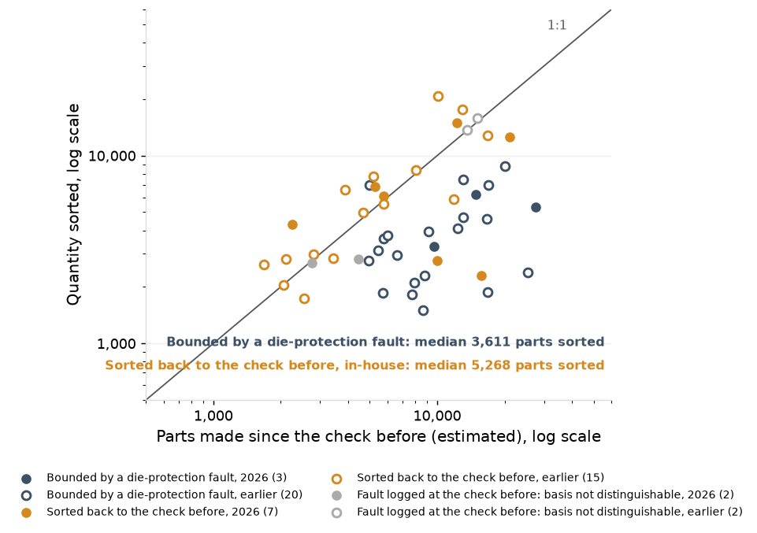
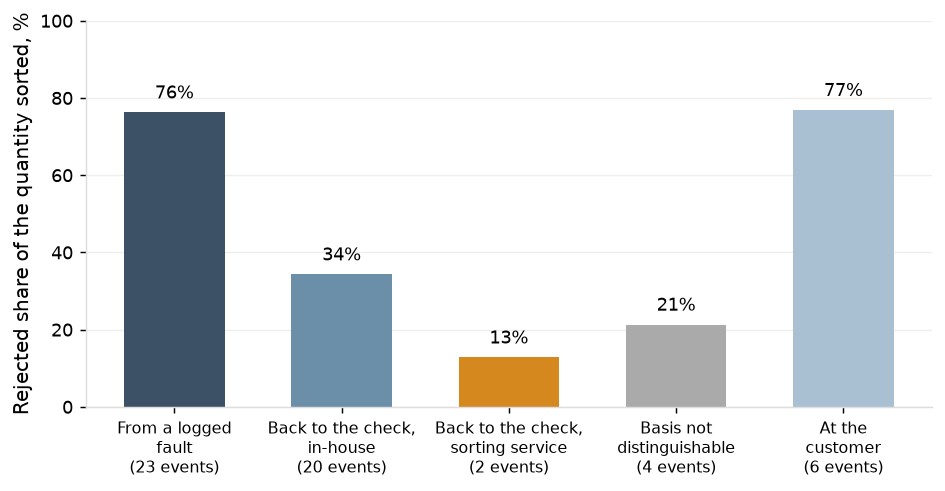
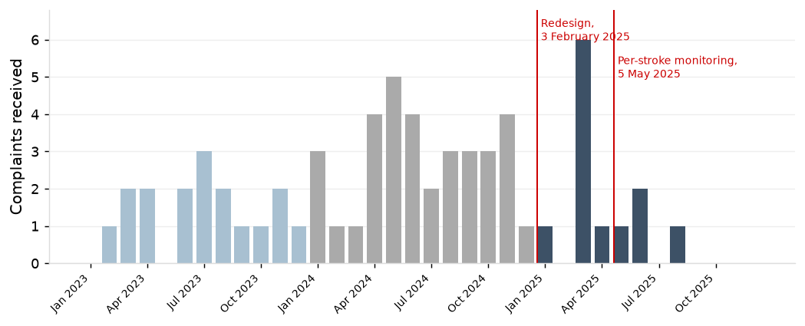